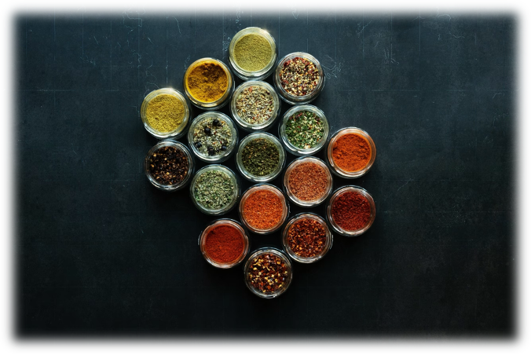

Welcome To Guryon's Indian Cuisine!
At Guryon’s Indian Cuisine, we are passionate about bringing the rich and diverse flavors of India to your table. Inspired by family recipes passed down through generations, our dishes are crafted using fresh ingredients and spices imported directly from India.
From traditional curries to modern fusion creations, each meal is carefully prepared to provide an authentic Indian dining experience. Whether you’re a lover of classic dishes like butter chicken or seeking vegetarian and vegan-friendly options, we have something to tantalize every palate.
Led by Guryon, our dedicated team ensures that every bite reflects the warmth, hospitality, and culture of India. We invite you to join us and savor the taste of home at Guryon’s Indian Cuisine!
At Guryon’s Indian Cuisine, spices are the heart of our cooking. We source our spices directly from India, ensuring that every dish carries the authentic flavors and aromas that define Indian cuisine, from the rich warmth of cumin to the vibrant kick of cardamom and chili.